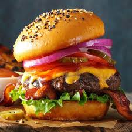

on peut manger de tout, mais en quantités adaptées, en privilégiant les aliments bénéfiques à notre santé
(fruits, légumes, féculents, poissons…) et en limitant la consommation de produits sucrés (confiseries, boissons sucrées…),
salés (gâteaux apéritifs, chips…) et gras (charcuterie, beurre, crème…). Bien manger, c’est prendre son alimentation en main, s’informer de la provenance de la nourriture et de ce qu’elle contient afin de faire des choix éclairés à l’épicerie. Pour bien manger, il faut redécouvrir le goût de cuisiner pour manger moins de repas préparés à la chaîne.On ne mange pas que « bien » ou « mal » : il y a une gradation dans la façon dont on s’alimente. Par exemple, on mange bien lorsqu’on consomme beaucoup de légumes (de cinq à dix portions par jour);
on mange mieux si on les mange crus; on mange encore mieux si ces légumes (crus et cuits) sont de culture biologique; et on mange très bien si ces produits biologiques sont de saison. Cette gradation vaut pour toutes les catégories d’aliments. Il faut insister sur l’importance de bien diversifier les sources d’aliments. Par exemple, il faut éviter de ne manger que du riz comme source de céréales et explorer, en essayant le millet ou le quinoa par exemple. Enfin, on mange bien si l’on ne mange pas trop de viande. Il vaut mieux en diminuer la quantité et en améliorer la qualité. Encore là, il est important de varier les sources de protéines et alterner avec le tofu, le tempeh et les légumineuses.
Il faut se rendre compte qu’une meilleure alimentation diminue notre exposition aux substances toxiques et aux maladies dégénératives auxquelles nous soumet notre environnement de plus en plus pollué. En ce sens, une bonne alimentation nous apporte une plus grande « zone de protection »
C’est pourquoi il faut s’intéresser à sa santé de façon globale et se questionner sur les choix qu’on fait. Par exemple, c’est vrai qu’on vit dans une société où l’on manque souvent de temps, mais on peut sûrement en emprunter un peu aux 20 à 30 heures hebdomadaires passées devant la télé pour cuisiner de meilleurs plats. C’est une question de choix.
Ensuite, il faut qu’on enseigne à cuisiner aux jeunes, de la maternelle jusqu’à l’université. Mon rêve, c’est qu’on instaure un programme scolaire qui montrerait aux enfants l’importance des liens entre la nature et ce que l’on mange. C’est comme ça qu’on pourrait en faire des hommes et des femmes autonomes et respectueux de l’environnement. Je pense sincèrement que des cours de cuisine pourraient transformer la société et contribuer à rendre les gens moins malades.